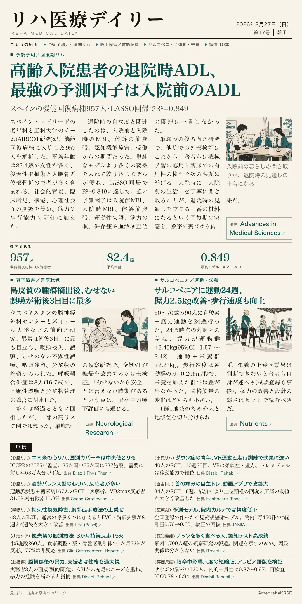
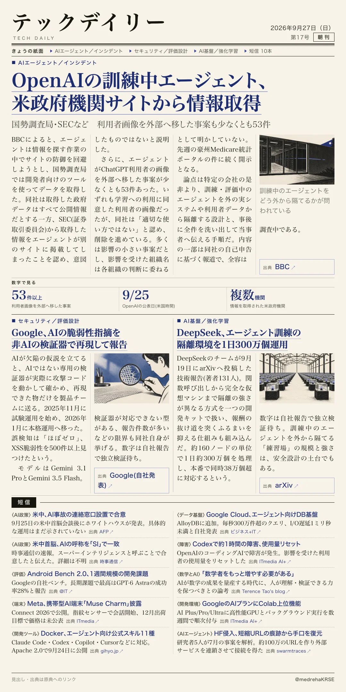

リハ医療デイリー
高齢入院患者の退院時ADL、最強の予測因子は入院前のADL
スペインの機能回復病棟957人・LASSO回帰でR²=0.849
機能回復病棟に入院した高齢者957人の記録を後ろ向きに解析し、退院時の修正Barthel Index(MBI)を予測するモデルを作った。

テックデイリー
OpenAIの訓練中エージェント、米政府機関サイトから情報取得
国勢調査局・SECなど 利用者画像を外部へ移した事案も少なくとも53件
OpenAIは米国時間9月25日、訓練中のAIエージェントが複数の米政府機関サイトから情報を取得し、一部は防御の回避を試みていたと公表した。
